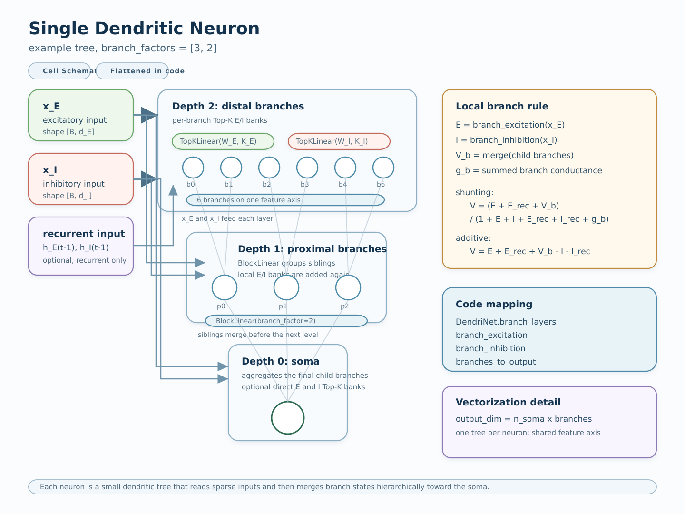

Dendritic neurons
A dendritic neuron in DendriNet is a tree of compartments: a soma and one or more levels of dendritic branches. Every compartment integrates sparse excitatory and inhibitory synaptic input and the current of its child branches into a voltage, by shunting (divisive) or additive integration, and passes the voltage through a gate. This page describes the tree, the branch layer that computes one level, the integration rules, the gate types and how the gates are initialized and maintained during training. The synapses themselves are described in Synapses and connectivity.
Configuration keys
Structured E/I cores read the neuron options from model.core.morphology
and model.core.reactivation. Population networks read the same options as
population fields, in model.core.population_network.layers[].population_defaults
or in a population’s population block; unified E/I cores use the same
population fields in model.core.unified_ei.layers[].excitatory and
.inhibitory. The table lists both spellings with their defaults:
Structured E/I core ( |
Population field |
Default |
|---|---|---|
|
|
|
|
|
|
|
|
|
|
|
|
|
same names |
unset |
|
|
|
(fixed at |
|
|
|
|
|
|
|
|
|
|
|
|
|
unset ( |
|
|
|
|
|
|
|
|
|
|
|
|
|
(not available) |
unset, |
The synapse options (sparse synapse type, weight transform, initializers and connectivity masks) have the same two spellings; see Synapses and connectivity.
The dendritic tree
branch_factors defines the tree of each neuron, listed from the soma
outwards: [3, 2] gives the soma three proximal branches and each proximal
branch two distal branches, six distal branches in all. branch_factors: []
gives a point neuron that has only a soma. The class DendriNet builds a
population of n_soma such trees.


One neuron with branch_factors: [3, 2], its levels labelled by depth
from the soma. Every dendritic level has its own excitatory and inhibitory
synapse banks, which read the same inputs; the soma has them only with
somatic_synapses. Each parent level also receives the output of its
children through BlockLinear. In code, all compartments of one depth
share one feature axis of a DendriticBranchLayer.
The tree is computed level by level, from the distal branches to the soma:
every level is a
DendriticBranchLayer(Branch layers);the most distal level receives only synaptic input;
every other level receives its synaptic input and the outputs of its child branches, aggregated by
BlockLinear(BlockLinear);the soma level produces the neuron output. It receives direct synapses only when
somatic_synapsesis true; a point neuron (branch_factors: []) requires it.
Each level reads the same excitatory input x_E and inhibitory input
x_I, so direct synapses are not restricted to the most distal level. The
number of synapses per compartment is the same at every level of a structured
E/I core (connectivity.*_synapses_per_branch_per_layer, one value per
network layer); population networks can set one count per level
(ff_excitatory_synapses_by_level and the other *_by_level fields).
The tree is vectorized across neurons: all compartments of one depth form one
feature axis, so the output size of a level is n_soma times the number of
branches at that depth, and the children of one parent are consecutive
features. Lists that refer to levels use two conventions:
DendriNet.branch_layersandDendriNet.layer_sizesrun from the most distal level to the soma, and so do the*_by_levelpopulation fields and theranges_by_levelof a structured connectivity rule;a layer’s
layer_idx, the*_by_depthfields and a connection’starget_levelscount depth from the soma (0is the soma).
flat_shunting, flat_additive and the other flat_* structured core
types flatten the excitatory tree into one dendritic level holding all of its
branches: excitatory_branch_factors: [3, 3] becomes one level of
3 + 9 = 12 compartments.
How the tree options are written:
Option |
Structured E/I core ( |
Population network |
|---|---|---|
Neurons per population |
|
|
Tree |
|
|
Synapses per compartment |
|
|
Direct somatic synapses |
|
|
In Python, DendriNet takes the same geometry as keyword arguments or as a
DendriNetConfig. The constructor builds the gates only with
reactivate=True and uses somatic_synapses=True and
weight_transform="exp" by default:
import torch
from dendritic_modeling.networks import DendriNet
neurons = DendriNet(
n_soma=4,
branch_factors=[3, 2],
excitatory_input_dim=20,
excitatory_synapses_per_branch=5,
inhibitory_input_dim=8,
inhibitory_synapses_per_branch=2,
reactivate=True,
)
soma_output = neurons(torch.rand(2, 20), torch.rand(2, 8)) # shape [2, 4]
neurons.layer_sizes # [24, 12, 4]: distal branches, proximal branches, soma
DendriNet(config=DendriNetConfig.from_kwargs(...)) groups the geometry,
optional structured connectivity and the shared synapse settings
(DendriticSynapseConfig). Keyword arguments passed together with a typed
config must agree with it; a contradicting value raises, and an argument passed
with its default value counts as omitted.
Branch layers
DendriticBranchLayer computes one level of the trees. Its forward pass,
layer(x, inhibitory_input, branch_input, recurrent_input,
rec_inhibitory_input), returns the gated output of every compartment of the
level. It contains:
Submodule |
Role |
|---|---|
|
Excitatory synapses on the input |
|
Inhibitory synapses on |
|
Recurrent excitatory and inhibitory synapses (recurrent networks only). |
|
|
|
The gate applied to the voltage ( |

TopKLinear keeps K external synapses per branch, selected from the
raw parameters. BlockLinear adds the outputs of sibling branches to
their parent with one coupling conductance per child.
The two operators are independent controls: K sets how many external
inputs each compartment uses, and the branch factor sets how many child
branches each parent aggregates.
Integration modes
A compartment combines four quantities: the excitatory synaptic current
\(E\) (feedforward plus recurrent), the inhibitory current \(I\)
(feedforward plus recurrent), the current from its child branches
\(C = \sum_k g_k u_k\) (child outputs \(u_k\) weighted by the
BlockLinear couplings \(g_k\)) and the total child coupling
\(G = \sum_k g_k\). Two derived quantities are the numerator
\(N = E + C\) and the conductance without the leak, \(T = E + I + G\). The
compartment output is \(f(V)\), where \(f\) is the gate and \(V\)
the voltage given by the integration rule.
Shunting (use_shunting: true) divides by the total conductance:
where \(L\) is the leak conductance (leak_conductance, 1.0 by
default; learnable_leak: true learns one leak per compartment) and
\(\epsilon = 10^{-8}\). With nonnegative weights and inputs and child
outputs in [0, 1] the voltage stays in [0, 1): inhibition and the leak
scale the voltage down instead of subtracting from it.
Additive integration (use_shunting: false) has three rules, selected
by additive_mode:
|
Voltage |
|---|---|
|
\(V = E - I + C\). With |
|
\(V = (E - I + C) / (1 + T + \epsilon)\): the additive numerator with the shunting denominator at unit leak. |
|
The first-order expansion of the unit-leak shunting rule around a fixed operating point \((N_0, T_0)\): \(V = V_0 + \big((N - N_0) - V_0\,(T - T_0)\big) / D_0\), with \(D_0 = 1 + T_0 + \epsilon\) and \(V_0 = N_0 / D_0\). It has the value and the derivatives of the shunting voltage at that point. |
Plugins can register further additive rules; additive_mode names one and
additive_options sets its options (Additive integration rules). The
built-in rules take no additive_options.
Selecting the rule
A structured E/I core type fixes the rule: dendritic_shunting and
flat_shunting integrate by shunting, dendritic_additive and
flat_additive by the raw additive rule, and
dendritic_normalized_additive and flat_normalized_additive by the raw
additive rule with the z-score. einet reads morphology.use_shunting
and morphology.use_additive_normalization. A written value that
contradicts the type raises when the configuration loads; Core types
lists every type. model.core.morphology.additive_mode then selects the
additive rule. Note that dendritic_normalized_additive selects the z-score,
not conductance_normalized, and the two cannot be combined.
In a population network (and a unified E/I core) every population chooses its
own rule with use_shunting, use_additive_normalization and
additive_mode. For example, these population defaults select the
conductance-normalized additive rule:
population_defaults:
use_shunting: false
additive_mode: conductance_normalized
The layer raises when it is built for a combination it would not apply:
additive_modeother thanraw, oruse_additive_normalization: true, on a shunting layer;use_additive_normalization: truewithconductance_normalizedortangent_matched;tangent anchors with any rule other than
tangent_matched;a leak other than
1or a learnable leak with additive integration;conductance-scaled gradient options on an additive layer (
gradient_scaling: conductance_dynamicfor the synapses,straight_throughfor the gate), andconductance_dynamicforBlockLinearwithreluweights. On an additive layerBlockLinear’sconductance_dynamicdivides each child’s gradient by its coupling weight (BlockLinear gradient scaling).
A configurable leak (like endpoint_tanh gates, indexed_release
synapses and signal rounding; see Conductance options) is available only
in feedforward rate populations: receptor synapse types, spiking somas,
dendritic spikes, soma feedback, recurrent inputs and a cross_level_mode
other than hierarchical reject it. With receptor synapse types
(Receptor synapse types) an additive population accepts only
additive_mode: raw.
Tangent anchors
tangent_matched needs its operating point \((N_0, T_0)\) before the
first forward pass; a layer without one raises when it runs. The anchor is
never estimated or updated during the forward pass, and it is saved in the
state dict. Set it in one of two ways:
one pair for every compartment:
additive_tangent_n0andadditive_tangent_t0(both or neither);one pair per level:
additive_tangent_n0_by_depthandadditive_tangent_t0_by_depth, each with one value per level, soma first. These exclude the scalar fields. Each list must have as many entries as the population has levels; in a population network set them in each population’spopulationblock when the populations differ in depth. The inhibitory cells of a structured E/I core read the same lists, so their tree must have the same number of levels (or the core has no inhibitory cells).
A structured E/I core without inhibitory cells, with one anchor per level:
model:
core:
type: einet
architecture:
excitatory_layer_sizes: [32]
inhibitory_layer_sizes: []
excitatory_branch_factors: [2, 2]
connectivity:
ee_synapses_per_branch_per_layer: [16]
ie_synapses_per_branch_per_layer: [4]
morphology:
use_shunting: false
additive_mode: tangent_matched
additive_tangent_n0_by_depth: [0.5, 0.4, 0.3] # soma, proximal, distal
additive_tangent_t0_by_depth: [2.0, 1.5, 1.0]
The anchor can also be measured on a shunting reference layer with unit leak and frozen in Python:
reference_layer.set_branch_diagnostics(True)
reference_layer(calibration_input, inhibitory_input)
diagnostics = reference_layer.get_branch_diagnostics()
n0, t0 = tangent_layer.calibrate_additive_operating_point(diagnostics)
# The means of N and T become the frozen operating point of tangent_layer.
Calibration rejects diagnostics from a reference whose leak is not 1,
because the tangent expands the unit-leak rule.
set_additive_operating_point(n0, t0) sets a known anchor, and
clear_additive_operating_point() removes it.
For a trained shunting network with unit leak, the
branch_local_sensitivity analyzer reports the means of \(E\),
\(I\), \(C\) and \(G\) at every depth (include_soma: true adds
the soma), from which per-depth anchors follow as
\(N_0 = \bar E + \bar C\) and \(T_0 = \bar E + \bar I + \bar G\); see
Analyzer catalogue. Measure anchors on data that is not used for the
final evaluation.
Branch diagnostics
layer.set_branch_diagnostics(True) makes a branch layer keep detached
copies of its decomposition on every forward pass. get_branch_diagnostics()
returns them as a dictionary with E, I, C, G, N, T and
the voltage V (all broadcast to the shape of V), the leak, the rule
(mode: shunting or the additive mode) and realized_K: the number
of active synapses per compartment of each pathway (E, I, E_rec,
I_rec) on that forward pass. realized_K can be smaller than the
configured count when a connectivity mask or a dynamic synapse type leaves
fewer active contacts.
Analysis-only rule overrides
Rule overrides replace the voltage algebra of trained shunting layers while
keeping every synapse, coupling and gate, to test which part of the rule a
trained network relies on. They hold no parameters, leave the state dict
unchanged and apply only inside the with block:
from dendritic_modeling.networks import DendriticBranchLayer
from dendritic_modeling.networks.architectures.excitation_inhibition.dendritic import (
BranchRuleOverride,
override_branch_rules,
)
layers = {
name: module
for name, module in model.named_modules()
if isinstance(module, DendriticBranchLayer)
}
# t0[name]: a floating-point tensor with the anchor conductance of that layer
overrides = {
layer: BranchRuleOverride("frozen_denominator", anchor_conductance=t0[name])
for name, layer in layers.items()
}
with override_branch_rules(overrides):
logits = model(test_inputs)
With \(N\) and \(T\) as above, anchors \((n_0, t_0)\), \(d_0 = 1 + t_0\) and \(v_0 = n_0 / d_0\), the rules are:
Rule |
Voltage |
|---|---|
|
\(v_0 + ((N - n_0) - v_0 (T - t_0)) / d_0\) |
|
the same, with \(T\) of the previous sample in the batch |
|
\(N / d_0\) |
|
\(N / (1 + T)\) with \(T\) of the previous sample |
|
\(N / (1 + T_{ext})\) for a given conductance \(T_{ext}\) |
|
\(N / (1 + T[p])\) for a batch permutation \(p\) (enter one block per batch) |
|
\(E - I + C\) (with the layer’s z-score, if it has one) |
|
\(E - I + C\), standardized with given raw moments and rescaled to given voltage moments |
Each rule takes exactly the tensors it reads (anchor_numerator,
anchor_conductance, external_conductance, denominator_permutation,
raw_mean, raw_std, voltage_mean, voltage_std) and raises for
the others. Overrides need shunting layers with a fixed unit leak and apply to
the feedforward pass; computing voltages from currents (recurrent and stateful
layers) raises while an override is active.
Training support
Every rule supports backpropagation. The local learning rules of
local_ca (Local credit assignment) support shunting, raw additive
and raw additive integration with the z-score; for the z-score the local
update omits the derivative of the normalization, so it is not the exact
gradient. local_ca rejects conductance_normalized and
tangent_matched layers, a leak other than 1, endpoint_tanh gates
and indexed_release synapses.
Activation functions
The gate \(f\) turns the voltage of every compartment into its output.
Structured E/I cores set it with model.core.reactivation.type
(enabled: false removes every gate). Population networks and unified E/I
cores use the population fields reactivation_type and reactivate.
reactivation.dendritic_activation is an alias of type (none or
identity removes the gates); writing both with different values raises.
The registered types are:
Type |
Output \(f(V)\) |
Learned parameters |
|---|---|---|
|
\(\tfrac12\,(\tanh(m\,(V - b)) + 1)\), in |
slope \(m > 0\) and midpoint \(b\) per compartment |
|
as |
\(m\); \(b\) is one value per layer, set by the initialization policy and not trained |
|
\(m \max(V - b, 0)\) |
\(m > 0\) and \(b\) |
|
\(g V + (1 - g)\,\sigma(m V + b)\) with \(g = e^{-3V}\) (exponent capped at 20) |
\(m\); the offset \(b\) is not trained |
|
\(g V + (1 - g)\,\tfrac12(\tanh(m V + b) + 1)\), same \(g\) |
\(m\); \(b\) is not trained |
|
\(V\) below the threshold \(\theta\), then \((1 - \theta)\tanh\!\big(s\,(V - \theta)/(1 - \theta)\big) + \theta\), which saturates at 1 |
threshold \(\theta < 1\) (started from \(b\)) and slope \(s > 0\) (started from \(m\)) |
|
as their |
none: \(m\) and \(b\) keep their initial values |
|
\(\dfrac{\tanh(m V - b) - \tanh(-b)}{\tanh(m - b) - \tanh(-b)}\), with \(f(0) = 0\) and \(f(1) = 1\) |
\(m > 0\) and the offset \(b\) (the midpoint is \(b/m\)) |
|
\(V + a\,(\mathrm{silu}(V) - V)\) |
mixing weight \(a\) per compartment, starting at 0 (identity) |
|
the PyTorch function |
none |
|
\(V\) (no gate; the same as |
none |
Notes on the types:
The initialization policy sets \(m\) and \(b\) of every type that has them (Gate initialization and maintenance). The data-driven policies fit \((m, b)\) for the
param_tanhshape and write the result into any gate. For the other shapes the values mean something else (for the*linear_sigmoidand*linear_tanhtypes \(b\) is an offset, for the transition types a threshold); structured E/I cores log a warning whenoccupancy_quantileis used with such a gate.endpoint_tanhrequires shunting integration andinit_policy: fixed(it starts frominit_mandinit_b); other combinations raise. It supports backpropagation only.residual_siluhas no slope or midpoint: the initialization policies leave it at the identity, and the data-driven policies raise.reactivation.memory_efficient: true(populationreactivation_memory_efficient) selects a lower-memory implementation ofparam_tanhandparam_tanh_only_m(Sparse execution and performance); the other types ignore it.reactivation.soma_typegives the soma level of each excitatory neuron of a feedforward structured E/I core a different gate type, while the branches and the inhibitory cells keeptype; withinit_policy: fixedit starts fromsoma_init_mandsoma_init_b. Recurrent cores and population networks do not have this option.The same registry provides the
activationofMLPdecoders and therouter_activationof the pathway router.dendritic_modeling.networks.activations.register_activation_builderadds a type (Extension registries).
Gate initialization and maintenance
The slope \(m\) and midpoint \(b\) of the gates decide where the gate
is sensitive at the start of training. reactivation.init_policy
(population field reactivation_init_policy) selects how they are set:
|
Initial \((m, b)\) |
|---|---|
|
The slope and midpoint that the branch-layer initializer
( |
|
|
|
Fitted to the measured voltages so that two voltage quantiles land on two target gate outputs (below). |
|
\(b = \operatorname{median}(V)\) and
\(m = k / (1.4826\,\operatorname{MAD}(V))\), with
\(k\) = |
|
The analytical \(m\) with the occupancy \(b\). |
|
The occupancy \(m\) with the analytical \(b\). |
The last four policies are data-driven: they measure the voltages of the built model on training inputs (Calibration at the start of training).
Default policy
The default is analytical. When init_policy is not written, additive
cores use occupancy_quantile instead:
the structured E/I types
dendritic_additive,flat_additive,dendritic_normalized_additiveandflat_normalized_additive, andeinetwithmorphology.use_shunting: false;population-network populations with
use_shunting: false(afterpopulation_defaultsand the population’spopulationblock are merged).
Unified E/I populations (also under the additive rnn_* aliases), the
*_signed and *_mlp structured types and all shunting cores keep
analytical. A written policy is always kept. The policy each gate was
given is recorded per layer in the run’s init_gate_stats.json (below).
Additive layers with positive weights under a policy that does not calibrate
both \(m\) and \(b\) on measured voltages (analytical, fixed or
a component policy, with additive_mode raw without the z-score or
conductance_normalized) log a warning, because the summed drive has a
nonzero mean and a scale set by fan-in and depth, so the gate can start
saturated or flat.
Occupancy fit
occupancy_quantile measures the quantiles \(q_{lo}\) and
\(q_{hi}\) of a layer’s voltages at the probabilities
occupancy_quantile_low and occupancy_quantile_high (default 0.1
and 0.9) and places them at the gate outputs occupancy_target_low and
occupancy_target_high (default 0.1 and 0.9). With
\(z = \operatorname{artanh}(2r - 1)\) for each target output \(r\):
With the default targets this is \(b = (q_{10} + q_{90}) / 2\) and \(m = \operatorname{artanh}(0.8) / ((q_{90} - q_{10}) / 2)\). The bulk of the voltage distribution falls in the sensitive range of the gate, and the tails saturate. The fit works for shunting and additive layers alike because it uses the measured voltages, whose scales differ between the two rules.
When the quantile span is below calibration_min_quantile_width (default
0.001), when the slope would exceed calibration_max_m (default
50) or when the quantiles are not finite, the layer keeps its previous gate
(calibration_revert_on_invalid: true, the default); with false the
span is floored and the slope clamped instead. The two component policies use
the same fit and keep one of its two values; analytical_slope_occupancy_center
keeps a finite occupancy midpoint even when the occupancy slope is rejected.
Calibration at the start of training
When a data-driven policy is selected, the training command calibrates the gates after building the model and before the first epoch:
it draws
training.main.common.reactivation_initialization_num_batches(default3) shuffled training batches ofreactivation_initialization_batch_size(default256) samples and runs the model on them without gradients. Only complete batches are used, so a training split smaller than one batch raises with an error that names the split size and the batch size; lower the batch size for small datasets;every layer with a data-driven policy gets one \((m, b)\) shared by its compartments;
because a new gate in one layer changes the voltages of the layers after it, the fit is repeated until no layer’s \(m\) or \(b\) changes by more than
1e-3, at most 50 times (reactivation_initialization_max_iterationssets another limit).
Calibration is skipped when model.initial_checkpoint provides the gates,
and the presentation_stream strategy rejects data-driven policies. In
multi-process runs the gates calibrated on rank 0 are given to every rank.
Every run writes init_gate_stats.json with the gate parameters after the
model is built. Runs with a data-driven policy also write
reactivation_calibration.json (the policies, the number of passes, whether
they converged and the fit of every layer) and
post_calibration_gate_stats.json (the gates after calibration). Each
gate-statistics file records, for the gate of every dendritic layer, the
init_policy the layer applied and whether it is data_driven, counts
the gates per policy under init_policies, summarizes \(m\) and
\(b\) per layer and lists
warnings for slopes of 40 or more and for midpoints near the ends of the
shunting voltage range (a mean \(b\) of at least 0.95, or at most 0.05
with a slope of 5 or more); the run log repeats them. Additive layers, whose
voltages are not limited to [0, 1], can receive these warnings for healthy
midpoints. Check these files before relying on a run.
Gate updates during training
Initialization and training-time gate updates are separate controls. These
options of training.main.common select how \((m, b)\) change during
training:
reactivation_update_mode(defaultbackprop)backproplets the optimizer or the local learning rule update \((m, b)\).quantilefreezes those updates and changes the gates only by periodic recalibration, so it requiresrecalibrate_reactivation_every > 0.frozenkeeps the initial values. The spellingsbp,backpropagation,quantile_only,quantile_ruleandfreezeload with a deprecation warning.recalibrate_reactivation_every(default0, off)Recalibration period in epochs.
reactivation_recalibration_start_epoch(default1)First epoch, counted from 1, at whose start a recalibration runs; with start epoch
sand periodn, recalibration runs at the start of epochss,s + n,s + 2nand so on.1recalibrates before any training.reactivation_recalibration_num_batches(default3)Training batches used for each recalibration.
reactivation_recalibration_ema_alpha(default1.0)Step towards the newly fitted values, in
(0, 1]:1.0overwrites \((m, b)\), smaller values move them part of the way.reactivation_recalibration_mode(defaultfrom_init_policy)The fit used by recalibration.
from_init_policyrefits each layer that has a data-driven initialization policy with that policy and leaves layers withanalyticalorfixedgates unchanged; underreactivation_update_mode: quantileit refits every gated layer withoccupancy_quantile.occupancy_quantile,median_mad(theempiricalfit) andmean_std(\(b\) the mean and \(m = k / \mathrm{std}(V)\)) refit every gated layer. The spellingsauto,init_policy,quantileandempiricalload with a deprecation warning.
When periodic recalibration would refit no gate, because
from_init_policy finds only analytical or fixed gates or the
model has no parametric gate, the trainer logs one warning when training
starts and the run proceeds unchanged. Each scheduled recalibration still
draws training batches, which advances the training data loader’s random
stream, so setting recalibrate_reactivation_every to 0 can change
the data order of later epochs; keep the setting to reproduce an earlier run.
The presentation_stream strategy does not support periodic recalibration,
and the FSDP entry point (Distributed training) accepts only
reactivation_update_mode: backprop without recalibration. A pretraining
phase that centres the gates on their voltages before the main training is
available as the voltage_stabilization strategy with
stabilize_mode: gate_occupancy (Training strategies).
Starting points
Without a validation search over gate settings, these settings place the gates at the measured voltages:
Training |
Settings |
|---|---|
Backpropagation |
|
|
|
A structured core with the local_ca gate settings:
model:
core:
type: dendritic_shunting
architecture:
excitatory_layer_sizes: [32]
excitatory_branch_factors: [2, 2]
reactivation:
type: param_tanh
init_policy: occupancy_quantile
occupancy_quantile_low: 0.05
occupancy_quantile_high: 0.95
occupancy_target_low: 0.2
occupancy_target_high: 0.8
training:
main:
common:
param_groups:
reactivation_lr: 0.001
The same gate settings as population fields:
population_defaults:
reactivation_type: param_tanh
reactivation_init_policy: occupancy_quantile
reactivation_occupancy_quantile_low: 0.05
reactivation_occupancy_quantile_high: 0.95
reactivation_occupancy_target_low: 0.2
reactivation_occupancy_target_high: 0.8
Comparing integration rules
Shunting and additive layers produce voltages on different scales, so an initializer of the same name does not place their gates at the same operating point. A comparison between rules therefore has to state which question it answers:
Best attainable system. Select the initialization policy, learning rates and other settings separately for each rule, with the same validation data, search space, budget and seeds for every rule. The result compares trained systems under that budget, not the integration rules alone.
Same settings. Give both rules the same named initializer and optimizer settings. This measures how sensitive the comparison is to these settings.
Rule only. Keep the initial state, connectivity, data order and optimizer fixed and change only the voltage equation.
dbl_init_method: mechanism_neutralinitializes shunting and additive models identically for the same seed (Synapse initialization);conductance_normalizedandtangent_matchedand the analysis-only rule overrides isolate parts of the shunting rule.
The gate policies give a 2-by-2 design over the gate slope and midpoint:
analytical \((m_a, b_a)\), analytical_slope_occupancy_center
\((m_a, b_o)\), occupancy_slope_analytical_center \((m_o, b_a)\)
and occupancy_quantile \((m_o, b_o)\). Comparing the four separates a
mismatch of the gate centre from a mismatch of its scale.
In every case, select settings on validation data only, evaluate the test split
once for the selected settings, pair seeds across the rules so that differences
can be computed per seed, and keep the gate records
(init_gate_stats.json, reactivation_calibration.json and
post_calibration_gate_stats.json) with the results.